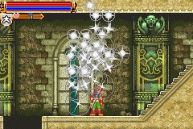
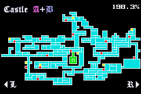

|
Maxim Kischine
วิธีนำ Maxim มาเล่นนั้น ต้องเล่นจบก่อน 1 รอบ (ไม่ว่าจะจบแบบไหนก็ตาม ยกเว้น
Game Over)
จากนั้นให้เลือกเริ่มเล่นเกมใหม่ ด้วย Save เกมอันใหม่ และตั้งชื่อว่า MAXIM
จากนั้นก็สามารถเล่นเป็น Maxim ได้
Maxim จะมีค่าพลังเริ่มต้น ดังนี้
Level: 0
Max HP: 306 (+5 per Life Max Up)
Max MP: 197
Max Hearts: 135 (+5 per Heart Max Up)
STR: 159
DEF: 191
INT: 131
LCK: 79
Maxim ไม่สามารถเก็บประสบการณ์เพื่อเพิ่ม Level ได้
แต่สามารถเพิ่ม HP และ Heart ได้จากการเก็บ Life Max Up และ Heart Max Up
อีกทั้งยังไม่มีอาวุธ หรือเครื่องป้องกัน ให้เก็บ
เก็บได้แต่เพียง "หัวใจ" เท่านั้น (และ "เงิน" แต่ก็ไม่สามารถซื้อของได้)
และ Maxim สามารโจมตีศัตรูได้เพียงครั้งละ 79
ดังนั้น Maxim จึงต้องมีความสามารถอื่นๆ เพื่อใช้ในการต่อสู้ ดังนี้
Slide Attack
กด "ล่าง" + "กระโดด"
Jump Kick

ระหว่างที่อยู่กลางอากาศ กด "ล่าง" + "โจมตี"
Screw Attack
ระหว่างที่อยู่กลางอากาศ กด "บน" + "กระโดด"
ใช้ 5 MP ต่อการหมุน 1 ครั้ง, หากกด "กระโดด" ค้างไว้จะทำให้หมุนตัวอยู่ตลอดเวลา
* หมายเหตุ จากภาพ Maxim สามารถหมุนเฟืองตัวนี้ได้ โดยการใช้ท่า Screw
Attack
Shuriken
กด "บน" + "โจมตี"
ใช้ 5 Heart ต่อการขว้าง Shuriken 1 อัน
Mirage Attack

กด "หน้า" "หลัง" "ล่าง" "บน" +
"โจมตี"
หรือ "หน้า" "ล่าง" "หลัง" "ล่าง"
"หน้า" + "โจมตี"
Maxim จะแยกร่างเป็น 3 ร่าง และโจมตีศัตรูทั้งหมด
ใช้ 100 MP
Healing

กด "บน" "ล่าง" "ล่าง+หน้า" "หน้า"
+ "โจมตี"
จะเพิ่ม HP ให้ Maxim จนเต็ม
ใช้ 50 Hearts
Maxim สามารถไปยังฉากต่างๆ ได้แทบทั้งหมด
ยกเว้นลงไปปราบ Big Boss บริเวณกลางปราสาท ของปราสาท A
หมายความว่า Maxim สามารถเปิดแผนที่ได้ทั้งหมดเพียง 198.3% เท่านั้น

Ending
|